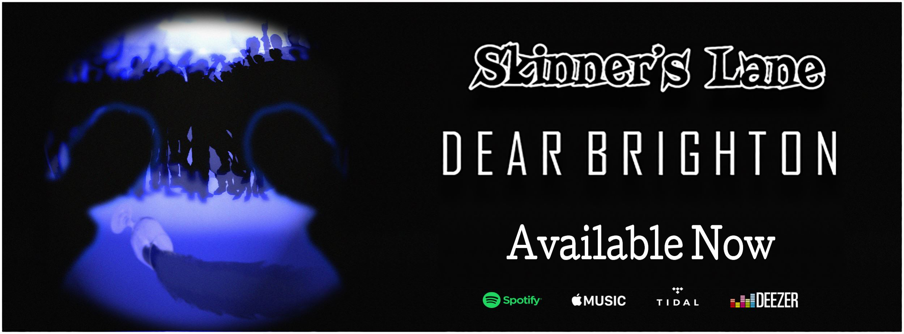

- Dear Brighton - Single

- Work Example

- Work Example
Skinner’s Lane is a three piece indie garage rock group based in Liverpool. Originally hailing from the likes of California, Dorset and Cheshire, all three met whilst studying in university. Despite such a short time together, they have already supported the likes of Chase City, Fiona Grey and The Wild Things. The sound of the band can be described as an amalgamation of heavy-indie-blues influences including the likes of Franz Ferdinand, Black Keys, and Royal Blood. "The band have a natural energy and stage presence and above all created a feeling of fun." - LS Radio "With the synth based indie-pop take over in the city, it has been a while that a band with such intense riffs and head bobbing chorus' has graced these parts. Everything about these guys is infectious and you could tell how quickly any inhibitions from the crowd to mosh on a work night disappeared out of their minds." - Boot Music "Even though the group played their original songs, they still managed to amass a following of fans who have previously seen them live at venues throughout the city. With the riff's combined with the frontman Zack' s energy, the place filled fast. Through the Canadian accent and the American humour, Zack and his band definitely set the bar high for acts to follow." - Purple Revolver "Opening with Every Time, the band emitted pure energy and skill. Building up the music, they held the space on stage well and put on a show for all. Displaying a range of styles from the funky and unique Down to slow ballad Said and Been, Skinner’s Lane showed they’re much more than the ‘one trick pony’ acts of today." - Ellipsis Magazine. "The opening rumble of guitar and drums is reminiscent of indie gods Arctic Monkeys and Franz Ferdinand, whilst vocalist Zak’s singing gives a nod to classic punk pop tracks of the late ‘90s and early ‘00s." - Liverpool Noise. "Featuring unforgettable guitar riffs and quick changes between the song’s direction" - Ellipsis Magazine "The cross contamination of indie and punk genres was electrifying and inspiring.” - One Great Song In recent months, Skinner's Lane have released its debut single ‘Dear Brighton,’ which delves into the misadventures of a Liverpool night out and the alienation of society. Currently the band is recording their next single as they look to continue their steady rise in not just the Liverpool scene, but Northwest music scene with their energetic, wild and driving performances.